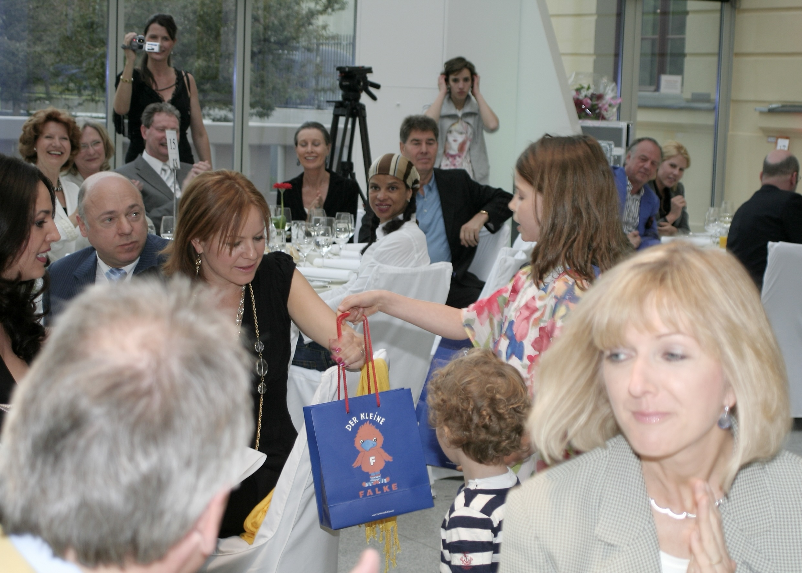
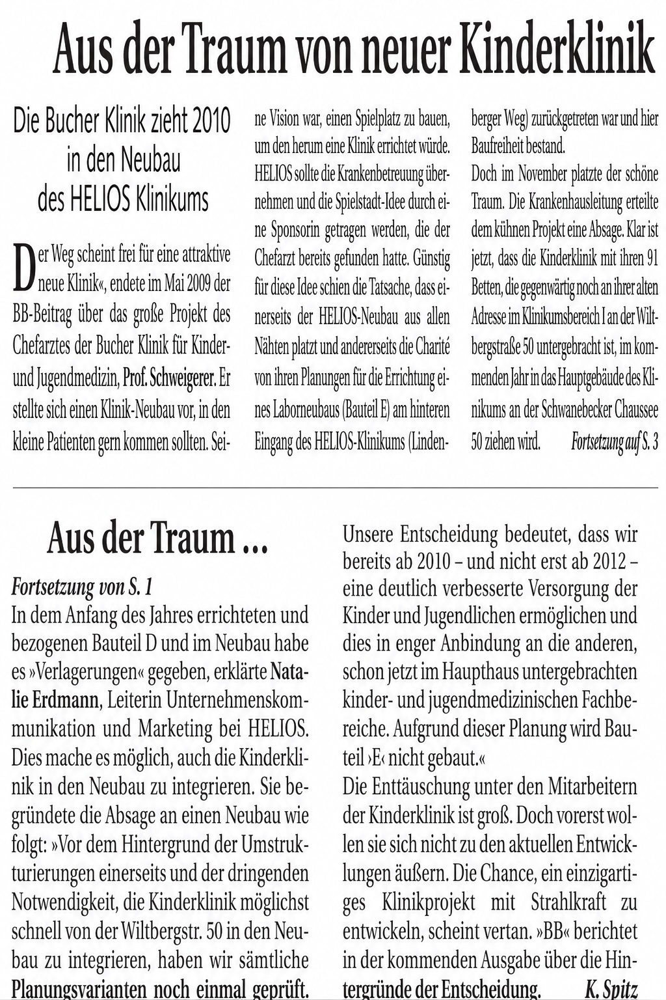

Als ich 2006 die Leitung der Klinik für Kinder- und Jugendmedizin im Helios Klinikum Berlin-Buch übernehmen sollte, sagte ich zunächst ab. Ich hatte mir die Kinderklinik angesehen. Das Gebäude stammte noch aus DDR-Zeiten. Über viele Jahre war kaum investiert worden. Schon von außen wirkte vieles heruntergekommen. Drinnen setzte sich dieser Eindruck fort. Bröckelnder Putz, abgenutzte Böden und dieser typische Geruch alter DDR-Krankenhäuser. Wer ihn einmal wahrgenommen hat, vergisst ihn nicht. Es roch nach Linoleum, Desinfektionsmittel und einer Zeit, die längst vorbei sein sollte.
Für mich war klar: Unter diesen Bedingungen wollte ich keine Kinderklinik übernehmen. Ich sagte Jörg Reschke deshalb ganz offen, dass ich nur unter einer Voraussetzung nach Berlin kommen würde.
„Bauen Sie mir eine neue Kinderklinik.“
Diese Zusage erhielt ich schließlich. Sie wurde sogar Bestandteil meines Vertrages. Damit war für mich die Grundlage geschaffen, nach Berlin zu wechseln. Wie diese neue Kinderklinik einmal aussehen sollte, wusste damals allerdings noch niemand.
Die erste Idee war, ein bestehendes Gebäude vollständig zu sanieren und über einen Tunnel mit dem bereits entstehenden Zentralklinikum zu verbinden. Je intensiver sich die Planer mit dem Projekt beschäftigten, desto deutlicher wurde jedoch, dass allein dieser Verbindungstunnel enorme Kosten verursachen würde. Die Idee wurde deshalb wieder verworfen.
Anschließend konzentrierte sich alles auf den geplanten Bauteil D des neuen Klinikums. Dort sollte die Kinderklinik integriert werden. Ich arbeitete von Anfang an eng mit dem Bauteam von Helios zusammen, fertigte eigene Skizzen an und brachte meine Vorstellungen in die Planung ein. Kurze Wege zwischen Stationen, Radiologie, Operationssälen und Intensivstation waren mir wichtiger als repräsentative Architektur. Helios hatte damals bereits zahlreiche Krankenhäuser gebaut und aus jedem Neubau Erfahrungen mitgenommen. Diese Zusammenarbeit machte Freude.
Doch während die Planungen voranschritten, meldeten die Erwachsenenkliniken immer mehr zusätzlichen Raumbedarf an. Unsere Kinderklinik wurde in den Entwürfen Schritt für Schritt kleiner. Irgendwann war klar, dass wir dort nur noch Kompromisse würden eingehen können.
So entstand eine neue Idee. Am hinteren Eingang des Klinikgeländes befand sich noch ein freies Grundstück. Dort sollte eine eigenständige Kinderklinik entstehen – ohne räumliche Zwänge und konsequent aus der Sicht der Kinder geplant.

Etwa zu dieser Zeit lernte ich Maren Otto kennen. Bei einer Benefizveranstaltung im Jüdischen Museum kamen wir ins Gespräch. Ich erzählte ihr von meiner Vorstellung einer Kinderklinik, die sich grundlegend von den üblichen Konzepten unterscheiden sollte. Ich wollte keinen Spielplatz neben einer Kinderklinik bauen. Ich wollte einen Spielplatz bauen, um den herum eine Kinderklinik entsteht. Theater, Musikstudio, Werkstatt, Kochstudio und große Aufenthaltsbereiche sollten das Herzstück des Gebäudes bilden. Die medizinischen Bereiche würden sich darum gruppieren. Kinder sollten dort spielen, lachen und für eine Weile vergessen können, warum sie überhaupt dort waren.
Maren hörte aufmerksam zu und stellte am Ende nur eine einzige Frage.
„Was kostet so etwas?“
„Ich habe noch keine Kinderklinik finanziert. Aber ich denke, ungefähr zehn Millionen Euro“, antwortete ich.
Damit war das Gespräch für mich eigentlich beendet. Ich hatte ihr lediglich eine Größenordnung genannt. Am nächsten Vormittag klingelte mein Telefon. Es war Maren Otto.
„Herr Professor Schweigerer“, sagte sie, „ich habe heute Morgen mit meinem Finanzberater Thomas Armbrust gesprochen. Wir werden Ihre Kinderklinik finanzieren.“
Ich war sprachlos. Am Abend zuvor hatte ich ihr eine Vision geschildert. Keine vierundzwanzig Stunden später war daraus ein Projekt geworden. Mit dieser Zusage ging ich zum Helios-Vorstand. Die Reaktion war ausgesprochen positiv. Der Vorstand stimmte der Errichtung der Maren-Otto-Kinderklinik euphorisch zu. Für einen privaten Klinikträger war eine Spende in Höhe von zehn Millionen Euro etwas Außergewöhnliches. Entsprechend groß war die Begeisterung. Ich stellte das Projekt mehrfach in der Konzernzentrale vor und hatte in dieser Zeit tatsächlich einen Stein im Brett. Besonders erinnere ich mich an den damaligen Justiziar des Konzerns, Stefan Eschmann. Er war von dem Projekt genauso begeistert wie ich und setzte den Vertrag auf, der die Zusammenarbeit mit Maren Otto regelte. Stefan Eschmann ist heute CEO der KMG Kliniken; aus dieser Zeit ist eine Freundschaft entstanden, die bis heute besteht.
Nun begann die eigentliche Arbeit. Maren kam fast jede Woche nach Berlin-Buch, nicht zu Vorstandssitzungen, sondern zu uns. Gemeinsam mit der damaligen Klinikgeschäftsführerin Jennifer Kirchner, mit Architekten, Physiotherapeuten, Erzieherinnen, Kinderkrankenschwestern und Mitarbeitern unseres Fördervereins saßen wir oft stundenlang über den Plänen. Auf dem Tisch lagen Grundrisse, Bleistifte und immer neue Skizzen. Während ich über medizinische Abläufe nachdachte, betrachtete Maren alles aus der Sicht der Kinder.
Wo konnten sie spielen? Wo konnten Eltern mit ihren Kindern einfach einmal zur Ruhe kommen? Wo durfte gelacht werden?
Sie hatte Architektur studiert und brachte unzählige eigene Ideen ein. Besonders wichtig waren ihr großzügige Freiflächen. Sie wollte keine Klinik bauen, in der jeder Quadratmeter wirtschaftlich optimiert war. Sie wollte Räume schaffen, in denen Kinder trotz ihrer schweren Erkrankung Kind sein konnten. Je häufiger wir uns trafen, desto konkreter wurde unsere gemeinsame Vision. Inzwischen sprach längst jeder nur noch von der MOKI – der Maren-Otto-Kinderklinik.
Wir waren überzeugt, etwas Einmaliges zu schaffen. Umso größer war der Schock, als mich Jörg Reschke eines Tages anrief. Francesco de Meo habe entschieden, dass die Maren-Otto-Kinderklinik in der geplanten Form nicht gebaut werde.
Ich konnte es zunächst überhaupt nicht glauben. Über Monate hatten wir gemeinsam geplant. Maren hatte sich nicht darauf beschränkt, Geld zur Verfügung zu stellen. Sie hatte Zeit investiert, Ideen entwickelt und Woche für Woche gemeinsam mit uns an dieser Kinderklinik gearbeitet. Noch kurz zuvor hatten wir über Grundrisse diskutiert. Jetzt war das Projekt mit einer einzigen Entscheidung beendet.

Natürlich wusste ich, dass wirtschaftliche Überlegungen bei einem Krankenhausneubau eine Rolle spielten. Mir war auch bewusst, dass Marens großzügige Planung mit ihren weiten Freiflächen erhebliche Mehrkosten verursacht hätte. Trotzdem fühlte sich diese Entscheidung wie ein Affront an. Nicht nur für Maren, sondern auch für mich. Wir waren beide vor den Kopf gestoßen.
Ich rief Jörg Reschke an und schilderte ihm, wie enttäuscht Maren Otto war. Nicht einmal die Entscheidung selbst stand dabei im Mittelpunkt. „Sie hätte wenigstens erwartet, dass man ihr schreibt“, sagte ich. „Ein Projekt dieser Größenordnung beendet man nicht mit einem Telefonat.“ Wenige Tage später erhielt Maren tatsächlich einen Brief, unterschrieben von Francesco de Meo. Ob der Text von ihm selbst stammte oder von Jörg Reschke formuliert worden war, weiß ich bis heute nicht.
An ihrer Haltung änderte das allerdings nichts mehr. Für Maren gehörten Stil, Respekt und Verlässlichkeit untrennbar zusammen. Nach dieser Erfahrung hatte sie jede Achtung vor den Verantwortlichen verloren. Mit Helios wollte sie nichts mehr zu tun haben.
Von Anfang an hatten wir allerdings nicht nur ein gemeinsames Projekt verfolgt. Parallel zur Maren-Otto-Kinderklinik planten wir auch ein Elternhaus für Familien schwer kranker Kinder. Dieses Projekt stand durch die Entscheidung nicht infrage. Im Gegenteil. Wir beschlossen, unsere ganze Kraft jetzt auf das Elternhaus zu konzentrieren. Maren zögerte keine Sekunde.
„Dann bauen wir eben zuerst das Elternhaus.“
So endete die Geschichte der Maren-Otto-Kinderklinik. Und gleichzeitig begann die Geschichte des Elternhauses.